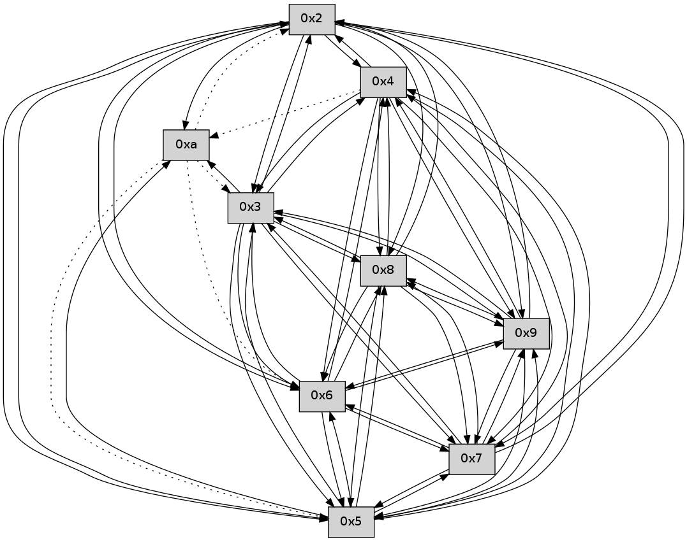

>> << IDX [start] -25 -5 +0 +5 +25 +100 [100.520769119]
 Previous packets
----------------------------------------------------------------------
95.299867 beacon01(faad) #0 coord=01,02,03,04,05,06,07,09,08 cycle=624.0ms assoc
-- color-indic=0 64 7b a2
95.309844 beacon02(faad) #0 coord=01,02,03,04,05,06,07,09,08 cycle=624.0ms assoc 64 6b 13
95.319845 beacon03(faad) #0 coord=01,02,03,04,05,06,07,09,08 cycle=624.0ms assoc 64 0d 9c
95.329848 beacon04(faad) #0 coord=01,02,03,04,05,06,07,09,08 cycle=624.0ms assoc 64 0c 28
95.339845 beacon05(faad) #0 coord=01,02,03,04,05,06,07,09,08 cycle=624.0ms assoc 64 6a a7
95.349845 beacon06(faad) #0 coord=01,02,03,04,05,06,07,09,08 cycle=624.0ms assoc 64 d1 3e
95.359847 beacon07(faad) #0 coord=01,02,03,04,05,06,07,09,08 cycle=624.0ms assoc 64 b7 b1
95.369852 beacon09(faad) #0 coord=01,02,03,04,05,06,07,09,08 cycle=624.0ms assoc 64 a4 d1
95.379852 beacon08(faad) #0 coord=01,02,03,04,05,06,07,09,08 cycle=624.0ms assoc 64 c2 5e
95.390975 [Hello(4): seq=67 sym=5,7,6,2,3,9,8 sysInfo= stat=5:11,0,0,0/7:10,0,0,0/6:2,0,0,0/2:10,0,0,0/3:13,0,0,0/9:8,0,0,0/8:6,0,0,0]
95.394291 [Hello(3): seq=67 sym=5,7,6,4,2,8,9 sysInfo= stat=5:7,0,0,0/7:10,0,0,0/6:15,0,0,0/4:8,0,0,0/2:11,0,0,0/8:8,0,0,0/9:6,0,0,0]
95.397162 [Hello(5): seq=67 sym=7,6,4,2,3,9,8 sysInfo= stat=7:15,0,0,0/6:11,0,0,0/4:5,0,0,0/2:3,0,0,0/3:3,0,0,0/9:8,0,0,0/8:6,0,0,0]
95.402427 [Hello(2): seq=67 sym=4,5,7,6,3,9,8 sysInfo= stat=4:11,0,0,0/5:1,0,0,0/7:2,0,0,0/6:10,0,0,0/3:15,0,0,0/9:7,0,0,0/8:6,0,0,0]
----------------------------------------------------------------------
96.013993 beacon01(faad) #0 coord=01,02,03,04,05,06,07,09,08 cycle=624.0ms assoc
-- color-indic=0 64 eb 7e
96.023971 beacon02(faad) #0 coord=01,02,03,04,05,06,07,09,08 cycle=624.0ms assoc 64 fb cf
96.033972 beacon03(faad) #0 coord=01,02,03,04,05,06,07,09,08 cycle=624.0ms assoc 64 9d 40
96.043974 beacon04(faad) #0 coord=01,02,03,04,05,06,07,09,08 cycle=624.0ms assoc 64 9c f4
96.053972 beacon05(faad) #0 coord=01,02,03,04,05,06,07,09,08 cycle=624.0ms assoc 64 fa 7b
96.063971 beacon06(faad) #0 coord=01,02,03,04,05,06,07,09,08 cycle=624.0ms assoc 64 41 e2
96.073972 beacon07(faad) #0 coord=01,02,03,04,05,06,07,09,08 cycle=624.0ms assoc 64 27 6d
96.083976 beacon09(faad) #0 coord=01,02,03,04,05,06,07,09,08 cycle=624.0ms assoc 64 34 0d
96.093979 beacon08(faad) #0 coord=01,02,03,04,05,06,07,09,08 cycle=624.0ms assoc 64 52 82
96.105731 [Hello(9): seq=9 sym=5,2,3,4,7,6,8 sysInfo= stat=5:8,0,0,0/2:6,0,0,0/3:8,0,0,0/4:9,0,0,0/7:3,0,0,0/6:3,0,0,0/8:2,0,0,0]
96.110009 [Hello(7): seq=67 sym=2,3,5,6,4,8,9 sysInfo= stat=2:15,0,0,0/3:11,0,0,0/5:9,0,0,0/6:6,0,0,0/4:12,0,0,0/8:3,0,0,0/9:4,0,0,0]
96.116039 [Hello(6): seq=67 sym=2,3,5,4,7,9,8 sysInfo= stat=2:10,0,0,0/3:12,0,0,0/5:9,0,0,0/4:12,0,0,0/7:3,0,0,0/9:3,0,0,0/8:3,0,0,0]
96.118480 [Hello(8): seq=9 sym=5,2,3,4,7,6,9 sysInfo= stat=5:6,0,0,0/2:7,0,0,0/3:9,0,0,0/4:9,0,0,0/7:3,0,0,0/6:4,0,0,0/9:3,0,0,0]
----------------------------------------------------------------------
96.728119 beacon01(faad) #0 coord=01,02,03,04,05,06,07,09,08 cycle=624.0ms assoc
-- color-indic=0 64 39 79
96.738097 beacon02(faad) #0 coord=01,02,03,04,05,06,07,09,08 cycle=624.0ms assoc 64 29 c8
96.748098 beacon03(faad) #0 coord=01,02,03,04,05,06,07,09,08 cycle=624.0ms assoc 64 4f 47
96.758098 beacon04(faad) #0 coord=01,02,03,04,05,06,07,09,08 cycle=624.0ms assoc 64 4e f3
96.768098 beacon05(faad) #0 coord=01,02,03,04,05,06,07,09,08 cycle=624.0ms assoc 64 28 7c
96.778098 beacon06(faad) #0 coord=01,02,03,04,05,06,07,09,08 cycle=624.0ms assoc 64 93 e5
96.788097 beacon07(faad) #0 coord=01,02,03,04,05,06,07,09,08 cycle=624.0ms assoc 64 f5 6a
96.798104 beacon09(faad) #0 coord=01,02,03,04,05,06,07,09,08 cycle=624.0ms assoc 64 e6 0a
96.808102 beacon08(faad) #0 coord=01,02,03,04,05,06,07,09,08 cycle=624.0ms assoc 64 80 85
96.819530 [Hello(3): seq=68 sym=5,7,6,4,2,8,9 sysInfo= stat=5:8,0,0,0/7:11,0,0,0/6:0,0,0,0/4:8,0,0,0/2:12,0,0,0/8:9,0,0,0/9:7,0,0,0]
96.822237 [Hello(2): seq=68 sym=4,5,7,6,3,9,8 sysInfo= stat=4:11,0,0,0/5:1,0,0,0/7:3,0,0,0/6:11,0,0,0/3:15,0,0,0/9:8,0,0,0/8:7,0,0,0]
96.825419 [Hello(5): seq=68 sym=7,6,4,2,3,9,8 sysInfo= stat=7:0,0,0,0/6:12,0,0,0/4:5,0,0,0/2:4,0,0,0/3:3,0,0,0/9:9,0,0,0/8:7,0,0,0]
----------------------------------------------------------------------
97.442245 beacon01(faad) #0 coord=01,02,03,04,05,06,07,09,08 cycle=624.0ms assoc
-- color-indic=0 64 a9 a5
97.452222 beacon02(faad) #0 coord=01,02,03,04,05,06,07,09,08 cycle=624.0ms assoc 64 b9 14
97.462223 beacon03(faad) #0 coord=01,02,03,04,05,06,07,09,08 cycle=624.0ms assoc 64 df 9b
97.472224 beacon04(faad) #0 coord=01,02,03,04,05,06,07,09,08 cycle=624.0ms assoc 64 de 2f
97.492224 beacon06(faad) #0 coord=01,02,03,04,05,06,07,09,08 cycle=624.0ms assoc 64 03 39
97.502224 beacon07(faad) #0 coord=01,02,03,04,05,06,07,09,08 cycle=624.0ms assoc 64 65 b6
97.512229 beacon09(faad) #0 coord=01,02,03,04,05,06,07,09,08 cycle=624.0ms assoc 64 76 d6
97.522230 beacon08(faad) #0 coord=01,02,03,04,05,06,07,09,08 cycle=624.0ms assoc 64 10 59
97.533338 [Hello(7): seq=68 sym=2,3,5,6,4,8,9 sysInfo= stat=2:0,0,0,0/3:12,0,0,0/5:10,0,0,0/6:7,0,0,0/4:12,0,0,0/8:4,0,0,0/9:4,0,0,0]
97.536037 [Hello(8): seq=10 sym=5,2,3,4,7,6,9 sysInfo= stat=5:7,0,0,0/2:8,0,0,0/3:10,0,0,0/4:9,0,0,0/7:3,0,0,0/6:4,0,0,0/9:3,0,0,0]
97.540800 ..2e2100 -- association-request >>>> 0001
97.543291 ..2e2100->..2e2100 -- association-response successful addr=000a
97.545120 [Hello(6): seq=68 sym=2,3,5,4,7,9,8 sysInfo= stat=2:11,0,0,0/3:13,0,0,0/5:10,0,0,0/4:12,0,0,0/7:3,0,0,0/9:3,0,0,0/8:4,0,0,0]
----------------------------------------------------------------------
98.156375 beacon01(faad) #0 coord=01,02,03,04,05,06,07,0a,09,08 cycle=688.0ms assoc
-- color-indic=0 64 84 bc
98.166357 beacon02(faad) #0 coord=01,02,03,04,05,06,07,0a,09,08 cycle=688.0ms assoc 64 17 8d
98.176357 beacon03(faad) #0 coord=01,02,03,04,05,06,07,0a,09,08 cycle=688.0ms assoc 64 6d c0
98.186359 beacon04(faad) #0 coord=01,02,03,04,05,06,07,0a,09,08 cycle=688.0ms assoc 64 1a 2a
98.196357 beacon05(faad) #0 coord=01,02,03,04,05,06,07,0a,09,08 cycle=688.0ms assoc 64 60 67
98.206357 beacon06(faad) #0 coord=01,02,03,04,05,06,07,0a,09,08 cycle=688.0ms assoc 64 ee b0
98.216357 beacon07(faad) #0 coord=01,02,03,04,05,06,07,0a,09,08 cycle=688.0ms assoc 64 94 fd
98.226364 beacon0a(faad) #0 coord=01,02,03,04,05,06,07,0a,09,08 cycle=688.0ms assoc 64 e5 f6
98.236364 beacon09(faad) #0 coord=01,02,03,04,05,06,07,0a,09,08 cycle=688.0ms assoc 64 6b 21
98.246363 beacon08(faad) #0 coord=01,02,03,04,05,06,07,0a,09,08 cycle=688.0ms assoc 64 11 6c
98.257494 [Hello(3): seq=69 sym=5,7,6,4,2,8,9 sysInfo= stat=5:9,0,0,0/7:12,0,0,0/6:1,0,0,0/4:8,0,0,0/2:13,0,0,0/8:10,0,0,0/9:7,0,0,0]
98.260501 [Hello(2): seq=69 sym=4,5,7,6,3,9,8 sysInfo= stat=4:11,0,0,0/5:2,0,0,0/7:4,0,0,0/6:12,0,0,0/3:15,0,0,0/9:8,0,0,0/8:8,0,0,0]
98.264161 [Hello(4): seq=69 sym=5,7,6,2,3,9,8 sysInfo= stat=5:13,0,0,0/7:11,0,0,0/6:4,0,0,0/2:12,0,0,0/3:14,0,0,0/9:10,0,0,0/8:8,0,0,0]
98.266406 [Hello(5): seq=69 sym=7,6,4,2,3,9,8 sysInfo= stat=7:0,0,0,0/6:13,0,0,0/4:5,0,0,0/2:4,0,0,0/3:3,0,0,0/9:10,0,0,0/8:8,0,0,0]
----------------------------------------------------------------------
98.944505 beacon01(faad) #0 coord=01,02,03,04,05,06,07,0a,09,08 cycle=688.0ms assoc
-- color-indic=0 64 38 b9
98.954487 beacon02(faad) #0 coord=01,02,03,04,05,06,07,0a,09,08 cycle=688.0ms assoc 64 ab 88
98.964487 beacon03(faad) #0 coord=01,02,03,04,05,06,07,0a,09,08 cycle=688.0ms assoc 64 d1 c5
98.974488 beacon04(faad) #0 coord=01,02,03,04,05,06,07,0a,09,08 cycle=688.0ms assoc 64 a6 2f
98.984488 beacon05(faad) #0 coord=01,02,03,04,05,06,07,0a,09,08 cycle=688.0ms assoc 64 dc 62
98.994488 beacon06(faad) #0 coord=01,02,03,04,05,06,07,0a,09,08 cycle=688.0ms assoc 64 52 b5
99.004490 beacon07(faad) #0 coord=01,02,03,04,05,06,07,0a,09,08 cycle=688.0ms assoc 64 28 f8
99.014493 beacon0a(faad) #0 coord=01,02,03,04,05,06,07,0a,09,08 cycle=688.0ms assoc 64 59 f3
99.024494 beacon09(faad) #0 coord=01,02,03,04,05,06,07,0a,09,08 cycle=688.0ms assoc 64 d7 24
99.034494 beacon08(faad) #0 coord=01,02,03,04,05,06,07,0a,09,08 cycle=688.0ms assoc 64 ad 69
99.045605 [Hello(7): seq=69 sym=2,3,5,6,4,8,9 sysInfo= stat=2:1,0,0,0/3:13,0,0,0/5:11,0,0,0/6:8,0,0,0/4:13,0,0,0/8:5,0,0,0/9:4,0,0,0]
99.047843 [Hello(6): seq=69 sym=2,3,5,4,7,9,8 sysInfo= stat=2:12,0,0,0/3:14,0,0,0/5:11,0,0,0/4:13,0,0,0/7:3,0,0,0/9:3,0,0,0/8:4,0,0,0]
99.050330 [Hello(10): seq=0 asym=6,3,2,5 sysInfo= stat=6:0,0,0,0/3:0,0,0,0/2:0,0,0,0/5:0,0,0,0]
99.053417 [Hello(9): seq=11 sym=5,2,3,4,7,6,8 sysInfo= stat=5:10,0,0,0/2:8,0,0,0/3:9,0,0,0/4:11,0,0,0/7:4,0,0,0/6:5,0,0,0/8:4,0,0,0]
99.057526 [Hello(8): seq=11 sym=5,2,3,4,7,6,9 sysInfo= stat=5:8,0,0,0/2:9,0,0,0/3:11,0,0,0/4:10,0,0,0/7:3,0,0,0/6:5,0,0,0/9:3,0,0,0]
----------------------------------------------------------------------
99.732638 beacon01(faad) #0 coord=01,02,03,04,05,06,07,0a,09,08 cycle=688.0ms assoc
-- color-indic=0 64 2c d7
99.742620 beacon02(faad) #0 coord=01,02,03,04,05,06,07,0a,09,08 cycle=688.0ms assoc 64 bf e6
99.752620 beacon03(faad) #0 coord=01,02,03,04,05,06,07,0a,09,08 cycle=688.0ms assoc 64 c5 ab
99.762621 beacon04(faad) #0 coord=01,02,03,04,05,06,07,0a,09,08 cycle=688.0ms assoc 64 b2 41
99.772620 beacon05(faad) #0 coord=01,02,03,04,05,06,07,0a,09,08 cycle=688.0ms assoc 64 c8 0c
99.782620 beacon06(faad) #0 coord=01,02,03,04,05,06,07,0a,09,08 cycle=688.0ms assoc 64 46 db
99.792620 beacon07(faad) #0 coord=01,02,03,04,05,06,07,0a,09,08 cycle=688.0ms assoc 64 3c 96
99.802626 beacon0a(faad) #0 coord=01,02,03,04,05,06,07,0a,09,08 cycle=688.0ms assoc 64 4d 9d
99.812625 beacon09(faad) #0 coord=01,02,03,04,05,06,07,0a,09,08 cycle=688.0ms assoc 64 c3 4a
99.822628 beacon08(faad) #0 coord=01,02,03,04,05,06,07,0a,09,08 cycle=688.0ms assoc 64 b9 07
99.834073 [Hello(2): seq=70 sym=4,5,7,6,3,9,8,10 sysInfo= stat=4:12,0,0,0/5:3,0,0,0/7:5,0,0,0/6:13,0,0,0/3:15,0,0,0/9:9,0,0,0/8:9,0,0,0/10:0,0,0,0]
99.837086 [Hello(5): seq=70 sym=7,6,4,2,3,9,8,10 sysInfo= stat=7:1,0,0,0/6:14,0,0,0/4:5,0,0,0/2:4,0,0,0/3:3,0,0,0/9:11,0,0,0/8:9,0,0,0/10:0,0,0,0]
99.839810 [Hello(4): seq=70 sym=5,7,6,2,3,9,8 asym=10 sysInfo= stat=5:14,0,0,0/7:12,0,0,0/6:5,0,0,0/2:12,0,0,0/3:14,0,0,0/9:11,0,0,0/8:9,0,0,0/10:0,0,0,0]
99.848884 [Hello(3): seq=70 sym=5,7,6,4,2,8,9,10 sysInfo= stat=5:10,0,0,0/7:13,0,0,0/6:2,0,0,0/4:9,0,0,0/2:14,0,0,0/8:11,0,0,0/9:8,0,0,0/10:0,0,0,0]